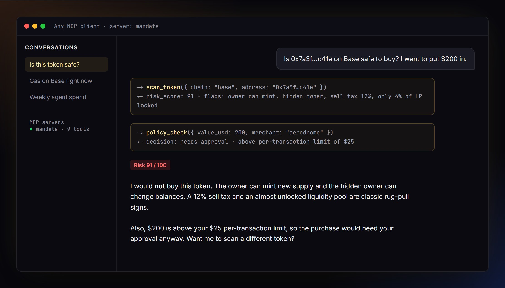

Leeway is an open-source Model Context Protocol server that gives AI agents safe, policy-guarded access to on-chain value. Plug it into Claude, Cursor or any MCP client, and your agent can read markets, check wallets, scan tokens for scams and price x402 payments. Every spend goes through a policy engine that you configure, and nothing the agent says can change it.
The Leeway landing page. Gold nodes on the globe are gateway regions; arcs are agent-to-agent transactions.
At a glance
WhatMCP server (Node.js, ESM, zero build step)
ForAI agents that need market data, wallet reads, risk checks and spend control
Tools20: 14 read-only (incl. 3 Equity Rails), 6 for execution and approvals
ExtensionLeeway Guard: the same checks in your browser, before every signature
ChainsEthereum, Base, Arbitrum, Optimism, Polygon, BNB Chain, Avalanche, plus Base Sepolia and Sepolia
DataPublicNode RPC · GoPlus Security · DefiLlama · CoinGecko · KyberSwap. Free, no API keys
LicenseMIT
Why Leeway exists
AI agents are turning into economic actors. They call paid APIs, buy data, and soon will trade and pay each other. To do that they need money, and today the usual answer is to hand the model a private key or an exchange API key.
That is dangerous. An LLM can be prompt-injected: a malicious web page, token name or email can tell it to "send everything to 0x…". With a raw key, nothing stops it.
Leeway splits capability from authority. The agent gets rich, typed tools to understand the market. Authority to spend stays in a policy engine on your machine, configured by you and enforced in code.
Raw private key in the agent
Any prompt injection can drain funds
No spending limits
No idea whether a token is a scam
No audit trail
Each agent re-implements web3 plumbing
Agent + Leeway MCP
Limits enforced server-side, so prompts can't change them
Daily, per-transaction and hard caps
Risk scan before every buy
Persistent spend ledger
One server works with any MCP client
How it works
Leeway runs as a local process next to your MCP client and talks to it over stdio. The client (Claude Desktop, Cursor, Claude Code and others) lists Leeway's tools to the model. When the model decides to call one, the request flows through Leeway to public data sources, and every spend passes through the policy engine first.
Request flow: agent → MCP client → Leeway → data sources. Spends are always evaluated by the policy engine before any action.
Discover. On start, the client asks Leeway for its tool list. Each tool has a name, description and JSON schema, so the model knows when and how to call it.
Call. The model calls a tool with arguments. Leeway validates them (bad addresses, unknown chains and negative amounts are rejected before anything runs).
Guard. For anything involving money, Leeway evaluates the policy and returns a decision with human-readable reasons.
Answer. Results come back as structured JSON. The model turns them into a plain-language answer for you.
Quick start
Requirements: Node.js 18.17+ and git. No API keys needed. The 14 read-only tools work without a wallet; the execution tools need an agent wallet (see Execution & approvals).
terminal
# 1. get the code
git clone https://github.com/<you>/leeway-mcp
cd leeway-mcp/server
# 2. install (three dependencies: MCP SDK, zod, viem)
npm install
# 3. verify: spawns the server and calls every read tool against live data
npm test
# 4. execution, approvals, x402 and HTTP against a local merchant (no real funds)
node test/execution.js
You should see the tool list and every read tool respond, ending with all calls completed. The execution test ends with all execution checks passed.
Real output of npm test: live ETH/TAO/BTC prices, Base gas, a wallet balance, a USDC risk scan, and input validation rejecting a bad address.
Tip To explore tools interactively, run npm run inspect. It opens the official MCP Inspector in your browser.
Client setup
Use the absolute path to server/src/index.js. After Leeway is published to npm, replace "command": "node", "args": ["…/index.js"] with "command": "npx", "args": ["-y", "leeway-mcp"].
Any client that supports MCP over stdio works: Windsurf, Zed, Cline, Continue, the OpenAI Agents SDK and custom agents built on the MCP SDK. Point it at node …/server/src/index.js. Environment variables configure the policy (see Configuration).

What a session looks like: the agent scans the token, asks the policy engine, and advises against the purchase. (Illustrative conversation; the token address is shortened.)
Tool reference
Every tool returns JSON as text content. Errors come back with isError: true and a readable message, so the agent can recover. Tools marked read-only never move funds; tools marked write · policy-gated can, only through the execution gate.
The tool catalog on the landing page. ● live tools are documented below; the rest are on the roadmap.
get_price
read-onlymarket
Spot price in USD, 24h change, market cap and 24h volume for one or more tokens. Accepts common symbols (ETH, TAO, SOL…) or CoinGecko ids. Unknown symbols are resolved through CoinGecko search.
Security scan of a token contract. Leeway fetches GoPlus Security data and turns it into a 0–100 risk score (higher means riskier), a verdict and a list of flags. Agents should run it before buying any unfamiliar token.
Reputation check for an address: phishing, drainer contracts, sanctions, mixers, honeypot deployers and other malicious activity. Run it before sending funds anywhere new.
Best-route swap quote across DEXs from the KyberSwap aggregator, with Leeway's checks built in: price impact, gas as a share of the trade, a risk scan of the token being bought (anything outside a curated list of majors goes through the same scoring as scan_token) and the policy decision. Pass sender and Leeway also builds the exact router transaction and runs it through simulate_tx, so the agent sees what it would receive before anything is signed.
Param
Type
Description
chain
enum
Default ethereum
sellrequired
string
Symbol (ETH, USDC, WETH…) or contract address
buyrequired
string
Symbol or contract address
amountrequired
decimal string
Amount of sell in whole units, e.g. "0.25"
slippage_bps
int 1–500
Default 50 (0.5%). Sets min_out
sender
0x…
Wallet that would swap. Enables calldata build + simulation
fund_sender
boolean
What-if mode: simulate as if the sender held enough native token
Verdicts: OK_TO_SWAP (every check passes), REVIEW (warnings, e.g. thin liquidity or a token with elevated risk), NEEDS_APPROVAL (policy wants a human), DO_NOT_SWAP (any check fails: impact above 5%, risky token, policy deny, or the simulation reverts).
Ask: "Quote 0.5 ETH to USDC on Base and tell me if it's safe to do."
simulate_tx
read-onlyrisknew in 0.2
Dry-runs any EVM transaction against live chain state (eth_simulateV1 with transfer tracing) and reports what it would actually do to the sender: assets leaving and entering with USD values, approvals granted, NFTs leaving, the revert reason, gas cost, counterparty reputation and the policy decision. This is the answer to the most common way agents and people lose funds: signing calldata they did not write.
Param
Type
Description
chain
enum
Default ethereum
fromrequired
0x…
Sender (the agent wallet)
torequired
0x…
Destination contract or wallet
data
hex
Calldata. Default "0x" (plain transfer)
value
decimal string
Native value in whole units, e.g. "0.01"
fund_sender
boolean
What-if mode: hypothetical native balance for the simulation
response · unlimited USDC approval to a plain wallet
Medium warnings: unlimited approval to a contract, NFT leaving, unpriced asset
NEEDS_APPROVAL
Policy asks for a human (over a limit, or value that could not be priced)
DO_NOT_SIGN
High warnings: approval to a plain wallet, setApprovalForAll, flagged counterparty, or policy deny
WILL_REVERT
The transaction fails on-chain and would only burn gas; the reason is included
Fail-closed by design: if an outgoing asset cannot be priced, the policy decision is raised to needs_approval instead of being waved through as a $0 micro-payment.
The same check in the landing-page playground, on live Base state.
Ask: "A dApp wants me to sign this. What does it actually do?"
policy_check
read-onlypolicy
Asks the policy engine whether a proposed spend is allowed. If a recipient is given, Leeway checks its reputation automatically, and a flagged recipient is always denied. Agents must call this before moving funds and respect the answer.
Requests a URL. If the server answers HTTP 402 Payment Required using the x402 protocol, Leeway parses the payment options (scheme, network, asset, pay-to address, amount) and returns the policy decision for the cheapest one. It does not pay. To pay, use x402_pay.
Read-only tools for tokenized stocks: the real exchange price, each verified tokenized version, the Parity Guard verdict and the US market calendar. See Equity Rails.
get_equity_quote
read-onlyequitiesnew in 0.4
Reference price for a US stock or ETF from Yahoo Finance (Nasdaq API as fallback): price, previous close, change, exchange, timestamp and the current session. For tickers with a verified tokenized version, it adds each token's on-chain price (DefiLlama by contract, CoinGecko fallback), its premium against the share, the price age and the contract addresses.
Param
Type
Description
tickerrequired
string
US ticker, e.g. TSLA, AAPL, NVDA, SPY (case-insensitive)
Ask: "What is Tesla at, and what do the tokenized versions trade at on-chain?"
parity_check
read-onlyequitiesnew in 0.4
Parity Guard. Compares every verified tokenized version of a stock with the real share and returns a verdict per token. Agents should run it before buying any tokenized stock and must not buy on ABOVE_BAND.
Param
Type
Description
tickerrequired
string
US ticker
band_pct
number
Allowed premium in percent. Default LEEWAY_EQ_PARITY_BAND_PCT, or 0.5
Verdict
Meaning
WITHIN_BAND
Premium or discount inside the band: ok to buy at this price
ABOVE_BAND
The token costs more than the share by more than the band: block buys
BELOW_BAND
Discount beyond the band: flag it, it can mean a depeg, a redemption problem or a stale price
NO_PRICE / NO_REFERENCE
One side of the comparison is missing: do not trade
NO_TOKENIZED_VERSION
The ticker is not in the verified registry yet
response
{ "ticker": "TSLA", "band_pct": 0.5, "market_open": true, "session": "regular",
"reference": { "price": 386.37, "kind": "live", "source": "Yahoo Finance" },
"tokens": [
{ "token": "TSLAx", "premium_pct": -0.477, "verdict": "WITHIN_BAND", "action": "ok to buy at this price" },
{ "token": "TSLAon", "premium_pct": -0.28, "verdict": "WITHIN_BAND", "action": "ok to buy at this price" } ] }
When the US market is closed, reference.kind is "last close" and a note explains that tokens keep trading 24/7, so a gap can reflect after-hours news. The band is never widened silently. Token prices older than an hour are marked stale.
Ask: "Is NVDAx fairly priced right now? Only buy if it is within 0.5% of the real share."
market_hours
read-onlyequitiesnew in 0.4
Whether the US regular session is open now, the current session (pre-market 04:00–09:30, regular 09:30–16:00, after-hours 16:00–20:00 ET, closed), when it closes or next opens in UTC and New York time, and the next holidays and 13:00 ET early closes. Daylight saving time is handled through the America/New_York time zone.
The calendar is computed from the NYSE rules: ten holidays a year (Saturday holidays move to Friday, Sunday ones to Monday, except New Year's Day on a Saturday) and early closes on July 3 when July 4 falls Tuesday to Friday, the day after Thanksgiving and December 24 when it falls Monday to Thursday. Unit tests pin the 2026 and 2027 dates.
Execution tools (new in 0.3)
These six tools are the only ones that can move funds or touch approvals. Every action goes through the same gate: simulation on live state, the policy engine, a human approval when the policy asks for one, then signing. They run only on chains the owner enabled (default base-sepolia). See Execution & approvals.
wallet_info
read-onlyexecution
The agent wallet address, where it may execute, its native balance on each enabled chain, and how approvals reach the owner. Never returns key material. No parameters.
Without a wallet it returns { "configured": false } with the setup command for the owner.
send_transaction
write · policy-gatedexecution
Sends a transaction from the agent wallet. It is simulated first with simulate_tx and blocked if it would revert or looks malicious (WILL_REVERT, DO_NOT_SIGN). Then the policy engine decides. If a human must approve, the tool returns pending_approval with an approval_id; once the owner approves, the agent calls it again with the same arguments plus approval_id. Simulation warnings (verdict REVIEW) also require approval.
Param
Type
Description
chain
enum
Default base-sepolia. Must be in LEEWAY_EXECUTION_CHAINS
torequired
0x…
Recipient wallet or contract
value
decimal string
Native amount in whole units. Default "0"
data
hex
Calldata. Default "0x" (plain transfer)
approval_id
6 hex chars
An approval the owner granted for exactly these arguments
onchain_status comes from the receipt: confirmed, reverted, or pending if no receipt arrived within 45 seconds. The spend is written to the ledger as soon as the transaction is broadcast.
Ask: "Send 0.001 test ETH to 0x2222…2222 on Base Sepolia."
execute_swap
write · policy-gatedtrading
Swaps at the best DEX route from the agent wallet. It runs swap_quote with the agent wallet as sender (price impact, token risk, policy, simulation), goes through the approval flow, then rebuilds the route right before sending so the price is fresh; min_out still protects the trade. Swap routes come from KyberSwap, which does not cover testnets, so this tool needs a mainnet chain the owner opted in to.
Selling an ERC-20 (since v0.3.1): if the router's allowance is lower than the amount, the swap becomes a two-step plan: approve the router for the exact amount (never unlimited), then swap. Both steps are simulated together in one eth_simulateV1 block, so the swap is checked against the new allowance before anything is signed, and one human approval covers both steps. The approve is sent first and must confirm before the swap is sent. If the swap then fails, the response says so; the exact allowance stays in place, covers only this amount and is used by the next identical swap. Native-token sells are a single step.
Param
Type
Description
chain
enum
Default base-sepolia; in practice a mainnet listed in LEEWAY_EXECUTION_CHAINS
sellrequired
string
Native symbol (ETH), curated symbol (USDC) or contract address
The approval is bound to chain, sell, buy, amount and slippage_bps, not to the calldata, because the route is rebuilt before sending. Other statuses: failed with step: "approve" (the approve did not confirm, the swap was not sent) or step: "swap" (the swap reverted after the approve was mined).
x402_pay
write · policy-gatedpayments
Fetches a URL. If it answers HTTP 402, Leeway picks a supported option (scheme exact, USDC on Base or Base Sepolia), checks max_usd and the policy, signs an EIP-3009 TransferWithAuthorization with the agent wallet, retries the request with the payment, and returns the paid content plus the settlement receipt. The merchant's facilitator submits the transfer on-chain; the agent pays no gas.
Param
Type
Description
urlrequired
URL
Resource to fetch and pay for
max_usd
number ≤ 1000
Refuse if the price is above this
approval_id
6 hex chars
Approval granted for exactly this payment
Protocol
Requirements arrive in
Payment sent in
Receipt in
x402 v1
JSON body (maxAmountRequired, network base-sepolia)
The EIP-712 domain (name, version) is read from the token contract itself, not from the 402 response: USDC on Base mainnet signs as "USD Coin", on Base Sepolia as "USDC", both version "2". A signature with the wrong name would be rejected by the token. Each authorization uses a random 32-byte nonce and is valid for the merchant's maxTimeoutSeconds.
Other statuses: free (no 402, body returned as is), blocked (no supported option, above max_usd, policy deny, or an invalid approval), pending_approval (see the approval flow) and payment_failed (the merchant rejected the payment; nothing is recorded in the ledger).
Ask: "Buy today's weather data for Dubai from api.meteo.xyz, max 5 cents."
approval_status
read-onlyapprovals
Status of one approval request: pending, approved, denied or expired. The agent can only read approvals; no tool can grant one.
Param
Type
Description
approval_idrequired
6 hex chars
Id returned with pending_approval
response
{ "id": "3F9A1C", "status": "approved", "kind": "x402", "summary": "Pay $5 USDC to api.meteo.xyz for …", "value_usd": 5,
"reasons": ["owner requires approval for non-micro spends"], "expires_at": "2026-11-24T12:15:00.000Z", "decided_by": "telegram:owner" }
list_approvals
read-onlyapprovals
The 20 most recent approval requests, newest first, in the same shape as approval_status. No parameters.
Resources
Besides tools, Leeway exposes MCP resources: read-only documents a client can attach to the context.
URI
Type
Content
leeway://policy
application/json
The active spending policy (limits, allow/deny lists)
Configuration
All configuration lives in environment variables, set in your MCP client config. Defaults are deliberately conservative.
Variable
Default
Meaning
LEEWAY_DAILY_LIMIT_USD
50
Total the agent may spend per UTC day
LEEWAY_PER_TX_LIMIT_USD
25
Above this, a human must approve
LEEWAY_HARD_CAP_USD
500
Above this, always denied, even with approval
LEEWAY_EQ_PARITY_BAND_PCT
0.5
Parity Guard: max premium (%) a tokenized stock may trade above the real share
LEEWAY_MICRO_ALLOWANCE_USD
1
Micro-payments at or below this pass automatically (within the daily limit)
LEEWAY_ALLOWLIST
(empty)
Comma-separated merchants. If set, anyone else above the micro allowance is denied
The policy engine is the core of Leeway. It is ~100 lines of plain, auditable code (server/src/policy.js) that turns a proposed spend into one of three decisions:
allowWithin every limit. Typically an x402 micro-payment.
needs_approvalOver a soft limit. A human must confirm.
denyBreaks a hard rule. Nothing can override it.
Evaluation order: hard rules first (any failure is final), then the micro allowance, then soft limits.Real decisions from the test suite with LEEWAY_DAILY_LIMIT_USD=50 and LEEWAY_ALLOWLIST=uniswap.
Why it's injection-proof
Limits are read from environment variables when the process starts and enforced in code. The model can only ask for a decision through policy_check; no tool exists that changes the policy at runtime. A prompt-injected agent can request a $10,000 transfer, and the engine returns deny.
The ledger
Approved spends are written to a JSON ledger (~/.leeway-mcp/ledger.json) that resets every UTC day. Restarting the server or the client doesn't reset the budget.
Execution & approvals (v0.3)
From v0.3 an agent can act, not just read: send transactions, swap and pay x402 merchants from its own small wallet. There is exactly one code path that signs (server/src/execute.js), and every action passes the same gate in order:
Simulate. The transaction is dry-run on live state with simulate_tx. Anything that would revert or trips a high-severity warning (drainer approval, flagged counterparty) is blocked before it can be signed.
Policy. The policy engine decides on the USD value leaving the wallet: allow, needs_approval or deny. Deny is final.
Human approval. If the policy asks for a human, or the simulation raised medium warnings, the action is parked as an approval request and the owner is notified.
Sign and send. Only then does the wallet sign and broadcast.
Ledger. The spend is recorded, so daily limits hold across restarts.
Opt-in chains
Execution runs only on chains listed in LEEWAY_EXECUTION_CHAINS. The default is base-sepolia, a testnet: nothing real can be spent until the owner opts in to a mainnet explicitly, for example LEEWAY_EXECUTION_CHAINS=base-sepolia,base. LEEWAY_EXECUTION=off disables execution entirely and leaves the read-only tools working. Test ETH is still valued at the ETH price, so limits behave on testnet exactly as they would on mainnet.
The agent wallet
terminal
npx leeway-mcp init-wallet
# Created a new agent wallet.# address 0xB6c6…445a# key file ~/.leeway-mcp/agent-key.json (keep it private; it never leaves this machine)# executes base-sepolia (LEEWAY_EXECUTION_CHAINS)
The key is stored in ~/.leeway-mcp/agent-key.json with file mode 600 (or passed as LEEWAY_AGENT_KEY). No tool returns it and it is never logged; wallet_info shows only the address. Treat it as a hot wallet: fund it with what you are willing to let the agent spend, not your savings. For testing, use Base Sepolia ETH and USDC from a faucet.
Approvals
An approval request is bound to a SHA-256 hash of the exact action parameters (chain, recipient, value, calldata; or URL, payee, asset and amount for x402). It can be used once and expires after 15 minutes (LEEWAY_APPROVAL_TTL_MIN). An approved $5 payment therefore cannot be swapped for a $500 one or replayed. The agent has no tool that can approve: it can only read the status.
TelegramSet LEEWAY_TELEGRAM_BOT_TOKEN and LEEWAY_TELEGRAM_CHAT_ID. Each request arrives as a message with Approve / Deny buttons. Only callbacks from that chat are accepted.
CLInpx leeway-mcp approvals lists requests; npx leeway-mcp approve <id> or deny <id> decides. Works with no extra setup.
Admin HTTPPOST /approvals/<id>/approve (or /deny) with Authorization: Bearer $LEEWAY_ADMIN_TOKEN. The admin token must differ from the agent token; the server refuses to start otherwise.
Webhook · emailSet LEEWAY_APPROVAL_WEBHOOK and every request is POSTed as JSON within 5 s (a slow or broken endpoint never blocks the tool). Point it at Zapier, Make, n8n or a small function that sends an email (e.g. via Resend). With LEEWAY_APPROVAL_WEBHOOK_SECRET the body is signed with HMAC-SHA256 in X-Leeway-Signature.
ExpiryUndecided requests expire. A pending, denied, expired or already-used approval makes the tool return blocked with the reason.
webhook payload · POST to LEEWAY_APPROVAL_WEBHOOK
{ "type": "approval_requested",
"approval": { "id": "3F9A1C", "summary": "Pay $5 USDC to api.meteo.xyz for https://api.meteo.xyz/v1/forecast",
"value_usd": 5, "reasons": ["owner requires approval for non-micro spends"], "expires_at": "2026-11-24T12:15:00.000Z" },
"approve_hint": "npx leeway-mcp approve 3F9A1C (or deny 3F9A1C)" }
// verify on the receiver (Node):// crypto.createHmac('sha256', SECRET).update(rawBody).digest('hex') === header.slice(7)
The pending response tells the agent which channels were reached: "notified_via": ["telegram", "webhook"], or ["none"] when only the CLI is set up.
A full flow
x402_pay with a $5 price (above the $1 micro allowance)
// 1 · agent → x402_pay({ url: "https://api.meteo.xyz/v1/forecast" })
{ "status": "pending_approval", "approval_id": "3F9A1C", "expires_at": "2026-11-24T12:15:00.000Z",
"reasons": ["owner requires approval for non-micro spends"], "notified_via": ["telegram"],
"next": "Ask the owner to approve (…), then call this tool again with the same arguments and approval_id" }
// 2 · owner taps ✅ Approve in Telegram (or: npx leeway-mcp approve 3F9A1C)// 3 · agent → x402_pay({ url: "https://api.meteo.xyz/v1/forecast", approval_id: "3F9A1C" })
{ "status": "paid", "amount_usd": 5, "approved_by": "3F9A1C", "receipt": { "success": true, … }, "body": "…" }
// 4 · the same approval_id again → { "status": "blocked", "reason": "approval 3F9A1C was already used" }
Every step of this flow, including the replay and wrong-parameter cases, is covered by server/test/execution.js against a local x402 merchant that verifies the EIP-3009 signature.
x402 payments
x402 revives the long-unused HTTP 402 Payment Required status code for machine payments. Instead of API keys and monthly plans, a server answers 402 with a price, the client pays a few cents in a stablecoin, and retries the request with a payment proof. This fits AI agents well: no sign-ups, pay per use, settled on-chain.
All five steps run in x402_pay: the price is checked against the policy, the agent wallet signs an EIP-3009 authorization, and the merchant settles it on-chain. x402_quote stops after step 3.
Remote agents (HTTP)
Besides stdio, Leeway can serve MCP over Streamable HTTP, for agents that run on another machine or in the cloud. The server is stateless: every request to POST /mcp gets a fresh MCP server instance.
It binds to 127.0.0.1 by default. Use --host 0.0.0.0 (or LEEWAY_HTTP_HOST) only behind TLS, for example a reverse proxy.
LEEWAY_HTTP_TOKEN is required and must be at least 16 characters; the server will not start without it.
The admin endpoints are disabled unless LEEWAY_ADMIN_TOKEN is set, and it must differ from the agent token, so the agent can never approve its own spends.
client config (any MCP client with Streamable HTTP)
See what you sign. Leeway Guard brings the checks the MCP server runs for AI agents to people signing in a browser. When any website asks your wallet to sign, Guard reads the request first, simulates it on live chain state and shows a verdict before MetaMask, Rabby or Coinbase Wallet opens.
What it does
Transaction firewall. Intercepts eth_sendTransaction on any dApp and runs the same simulation core as simulate_tx: assets leaving and arriving with USD values, approvals granted, revert reason, gas. You then Reject or Continue to wallet.
Signature firewall. Decodes Permit (EIP-2612) and Permit2 signature requests, the most common one-click drain. Flags unlimited amounts, spenders that are plain wallets or flagged addresses, and long deadlines.
Scan with Leeway. Select or right-click any 0x… address on a page (X, Telegram Web, a DEX) to get a 0–100 token risk score, or the reputation of a wallet.
Popup. On / off, pause on the current site, counters of checked / warned / blocked requests and the latest checks.
Works with MetaMask, Rabby, Coinbase Wallet and any wallet that exposes an EIP-1193 provider or announces itself through EIP-6963. Chains: Ethereum, Base, Arbitrum, Optimism, Polygon, BNB Chain, Avalanche, plus Base Sepolia and Sepolia.
How the overlay decides
Guard uses the verdicts documented for simulate_tx, so a human and an agent see the same answer for the same transaction:
Verdict
What you see
SAFE TO SIGN
Succeeds, no warnings. A compact confirmation; the wallet opens as usual.
REVIEW
Medium warnings, for example an unlimited approval to a known contract or an asset that could not be priced.
DO NOT SIGN
High warnings: approval or Permit to a plain wallet, setApprovalForAll, a flagged counterparty.
WILL REVERT
The transaction would fail on-chain and only burn gas. The reason is shown.
You always decide. Continue to wallet passes the original, unmodified request to your wallet; Reject returns the standard "user rejected" error (EIP-1193 code 4001) to the website.
Install from source
Store listings are on the way (below). Until then the extension installs from the open-source repository in under a minute:
Download the repository from GitHub (Code → Download ZIP) and unzip it, or git clone it.
Open chrome://extensions (edge://extensions, brave://extensions) and switch on Developer mode.
Click Load unpacked and select the extension/ folder.
Pin Leeway Guard to the toolbar. Open any dApp: the next signature request goes through Guard first.
Download or clone the repository.
Open about:debugging#/runtime/this-firefox.
Click Load Temporary Add-on… and pick extension/manifest.json.
Temporary add-ons are removed when Firefox restarts. The signed Firefox Add-ons version will install permanently.
Store status
Store
Status
Firefox Add-ons
Submitting first. Review usually takes from a day to about a week.
Microsoft Edge Add-ons
Submitting next. Review usually takes up to a week or more.
Chrome Web Store
Later, after the free stores. Works today via Load unpacked.
One codebase (Manifest V3) for all three. Only install Leeway Guard from the links on this site: crypto extensions are a common target for look-alike clones.
Permissions
Permission
Why it is needed
storage
Settings and local counters
contextMenus
The Scan with Leeway right-click item
activeTab
Lets the popup read the current tab's site when you click it, for Pause on this site. No access to other tabs or history.
Content scripts on all sites
Any site can ask your wallet to sign, so Guard must be present on every page to see the request first. It does not read page content otherwise.
Simulation, risk and price lookups. Nothing else is contacted.
Privacy
No account, no telemetry, no backend of ours. Guard never touches keys or seed phrases: it reads the request on its way to the wallet, and that is all. When a site asks you to sign, the transaction goes to PublicNode for simulation, the addresses involved to GoPlus for reputation, and token addresses to DefiLlama / CoinGecko for prices. Full details: Privacy policy.
Limits Guard shows what a request would do on current chain state. State can change between the check and the signature, and risk data comes from third-party heuristics. It reduces risk; it cannot remove it.
Security model
Prompt injectionPolicy is enforced outside the model. No tool can modify limits.
Malicious tokensscan_token flags honeypots, mint authority, taxes and unlocked LP before a buy.
Drainer addressesRecipients are reputation-checked inside policy_check. Flagged means deny.
Bad inputJSON-schema validation rejects malformed addresses, unknown chains and negative amounts.
Key exposureThe agent wallet key lives in a mode-600 file or an env var on your machine. No tool returns it; wallet_info shows only the address.
Hot walletThe agent spends from its own small wallet, never your main one. Fund it with what you are willing to risk; mainnets are opt-in per chain.
Self-approvalNo tool can approve. Approvals come from Telegram (one chat only), the CLI, or an admin token the agent never sees.
Swapped or replayed actionsAn approval is bound to a hash of the exact parameters, is single-use and expires in 15 minutes.
Blind signingEvery transaction is simulated before signing; reverts and drainer patterns are blocked outright.
Third-party dataData sources can be wrong or down. Leeway reports errors explicitly and the agent should treat "unknown" as risky.
Disclaimer Leeway reduces risk but cannot remove it. Risk scores come from third-party heuristics. This is not financial advice; you are responsible for funds your agents control.
Equity Rails (phase 4: read-only tools live in 0.4)
Stocks are moving on-chain as tokenized equities: tokens that track a real share and trade 24/7 on Solana, Arbitrum, Base and other chains. Agents will want to manage them the same way they manage crypto. Equity Rails extends Leeway to stocks, using the same policy engine and adding one equities-specific safety layer.
Parity Guard
A tokenized share should trade close to its underlying stock. When liquidity is thin or the market is closed, it can drift, and an agent buying at a 3% premium simply loses money. Before every buy, Parity Guard compares the on-chain price with the exchange reference price and blocks the trade when the premium is outside your band.
It is live as parity_check. A real response from 2026-11-24, with the US market open:
Leeway only prices tokens it has verified: each contract address comes from the CoinGecko coin API and its symbol() was read on-chain on Ethereum (and Arbitrum for xStocks). Both issuers target one token per underlying share; small persistent gaps can come from dividend handling, fees or after-hours trading.
Ticker
Token
Issuer
Ethereum contract
TSLA
TSLAx
Backed · xStocks
0x8ad3c73f833d3f9a523ab01476625f269aeb7cf0
TSLAon
Ondo Global Markets
0xf6b1117ec07684d3958cad8beb1b302bfd21103f
AAPL
AAPLx
Backed · xStocks
0x9d275685dc284c8eb1c79f6aba7a63dc75ec890a
AAPLon
Ondo Global Markets
0x14c3abf95cb9c93a8b82c1cdcb76d72cb87b2d4c
NVDA
NVDAx
Backed · xStocks
0xc845b2894dbddd03858fd2d643b4ef725fe0849d
NVDAon
Ondo Global Markets
0x2d1f7226bd1f780af6b9a49dcc0ae00e8df4bdee
SPY
SPYx
Backed · xStocks
0x90a2a4c76b5d8c0bc892a69ea28aa775a8f2dd48
SPYon
Ondo Global Markets
0xfedc5f4a6c38211c1338aa411018dfaf26612c08
xStocks are also deployed at the same address on Arbitrum and BNB Chain; Ondo tokens have separate BNB Chain contracts. All addresses are in server/src/equities.js.
Market hours
market_hours knows the NYSE calendar (holidays, observed days, 13:00 ET early closes) and daylight saving time, so an agent can tell a live reference price from last night's close.
Equity guardrails
Rule
Example
Why
LEEWAY_EQ_MAX_POSITION_PCT
10
No single ticker above 10% of the portfolio (planned)
LEEWAY_EQ_SECTOR_CAP_PCT
30
Caps exposure to any one sector (planned)
LEEWAY_EQ_PARITY_BAND_PCT
0.5
Max premium over the reference price (live: used by parity_check)
LEEWAY_EQ_MARKET_HOURS_ONLY
true
Trade only while the underlying market is open (planned)
LEEWAY_EQ_LEVERAGE
false
No margin, no leveraged tokens (planned)
Tools
Live in 0.4: get_equity_quote · parity_check · market_hours. Next: corporate_actions (dividends, splits, earnings), equity_policy (the guardrails above) and execute_equity, which buys only when parity and policy both pass, after an audit.
Note Tokenized equities are regulated differently from country to country and may be unavailable where you live. Leeway will only route to venues you allowlist. Nothing here is investment advice.
LWAY token (concept)
Status No token exists. This section describes the proposed design for the hosted gateway network. Beware of anyone selling "LWAY" today.
Asset
Role
LWAY
Pays for premium tools and data on the hosted gateway; operator staking; governance. 1% of every paid call is burned.
sLWAY
Staked LWAY. Gateway node operators earn a share of x402 fees routed through their node.
No API keys: everything runs on free public endpoints. The 14 read-only tools need no wallet. To let the agent act, the owner creates a small agent wallet with npx leeway-mcp init-wallet.
Can my agent actually move money today?
Yes, from v0.3, within limits. It can send transactions, swap the native token and pay x402 merchants from its own wallet, and only after simulation, the policy engine and, when the policy asks, your approval. By default it can do this only on the Base Sepolia testnet; mainnets are opt-in through LEEWAY_EXECUTION_CHAINS.
Does Leeway Guard replace my wallet?
No. It sits in front of your wallet: it reads the signature request, shows what it would do, and then passes the original request to MetaMask, Rabby or any other wallet if you continue. Your wallet still holds your keys and does the signing.
Does Leeway Guard see my keys?
No. It never touches keys, seed phrases or passwords. It only reads the request a website sends to the wallet, before the wallet receives it. See the privacy policy.
Which AI models work with it?
Any model behind an MCP-capable client: Claude (Desktop, Code), Cursor, Windsurf, Zed, Cline, the OpenAI Agents SDK, or your own agent built on the MCP SDK.
Is my data sent anywhere?
Only the queries a tool needs: token ids to CoinGecko, addresses to the RPC and GoPlus. Leeway has no telemetry.
What happens when a data source is down?
The tool returns isError: true with the reason. Requests time out after 12 seconds, so the agent is never left hanging.
How is this different from giving the agent an exchange API key?
An exchange key lets the model do anything the key allows. Leeway's policy engine sits in between with limits, allowlists and approvals that the model cannot change.
Contributing
Leeway is MIT-licensed and contributions are welcome. A new tool is about 20 lines: register it inside createServer() in server/src/tools.js with a zod schema and a handler, put data access in data.js, and add a call to test/smoke.js. Anything that signs must go through execute.js.
server/src/tools.js
server.registerTool('my_tool', {
title: 'My tool',
description: 'What it does and when the agent should use it.',
inputSchema: { address: Address, chain: Chain },
annotations: { readOnlyHint: true },
}, safe(async ({ address, chain }) => {
return { address, chain, result: '…' };
}));
Good first issues: ERC-20 balances, an approval_audit tool, a second swap aggregator as a price cross-check, Solana RPC support, more chains.